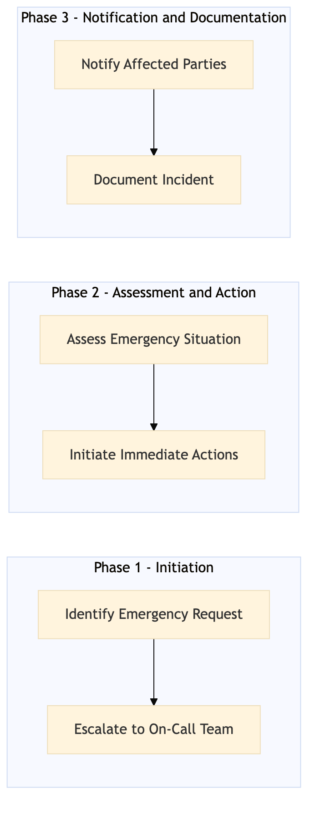

This process document outlines the After-Hours Emergency Travel Support procedure for TM-BK-05, ensuring timely and effective assistance to travelers during non-operational hours.
| Trigger | Receiving an emergency travel request outside of regular business hours |
| Outcome | The traveler receives immediate support, necessary actions are taken to resolve the issue, and all relevant parties are informed and updated. |
| Systems | Concur T2 Amadeus GDS S/4HANA Salesforce Analytics Cloud |

Click to enlarge
| Step | Name & Pain Point | Role | System | Input | Output | KPI | Flags |
|---|---|---|---|---|---|---|---|
| 1.1 | Identify Emergency Request Delays in identifying and acknowledging the request | Travel Support Coordinator | Concur T2 | Emergency travel request from traveler or authorized representative | Acknowledgment of emergency request | Response time within 5 minutes | ◆ Decision |
| 1.2 | Escalate to On-Call Team Ineffective escalation process | Travel Support Coordinator | Concur T2 | Acknowledgment of emergency request | Notification sent to on-call team | Escalation time within 10 minutes | ⚠ Exception |
| 2.1 | Assess Emergency Situation Inaccurate assessment leading to delayed response | On-Call Travel Specialist | Concur T2, Amadeus GDS | Emergency request details | Assessment of the situation and identification of necessary actions | Assessment time within 15 minutes | ◆ Decision |
| 2.2 | Initiate Immediate Actions Failure to initiate timely actions | On-Call Travel Specialist | Amadeus GDS, S/4HANA | Assessment of the situation and necessary actions | Immediate actions taken to resolve the issue | Action initiation time within 20 minutes | ⚠ Exception |
| 3.1 | Notify Affected Parties Inadequate communication leading to confusion | On-Call Travel Specialist | Concur T2, Salesforce | Resolution of the issue | Notification sent to traveler, travel manager, and relevant stakeholders | Notification time within 30 minutes | ◆ Decision |
| 3.2 | Document Incident Lack of proper documentation | On-Call Travel Specialist | Concur T2, Analytics Cloud | Resolution of the issue and notification details | Incident documented in system for future reference | Documentation time within 45 minutes | ⚠ Exception |